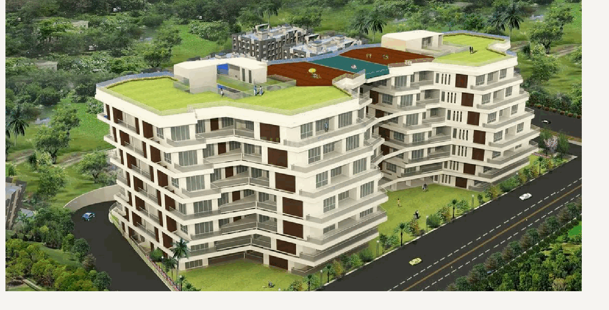
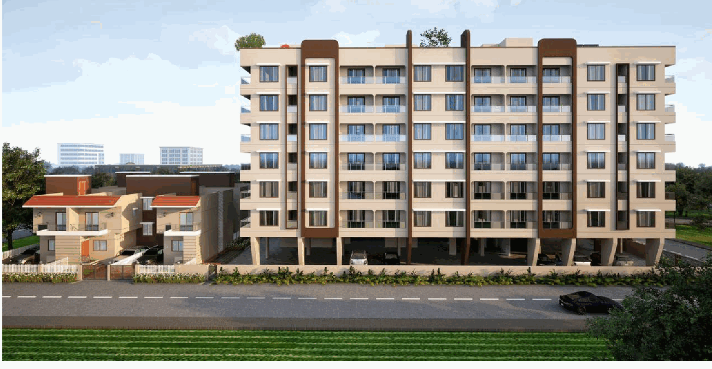
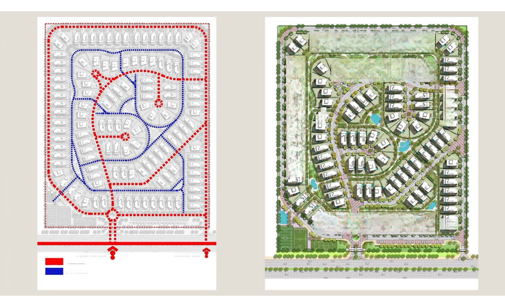
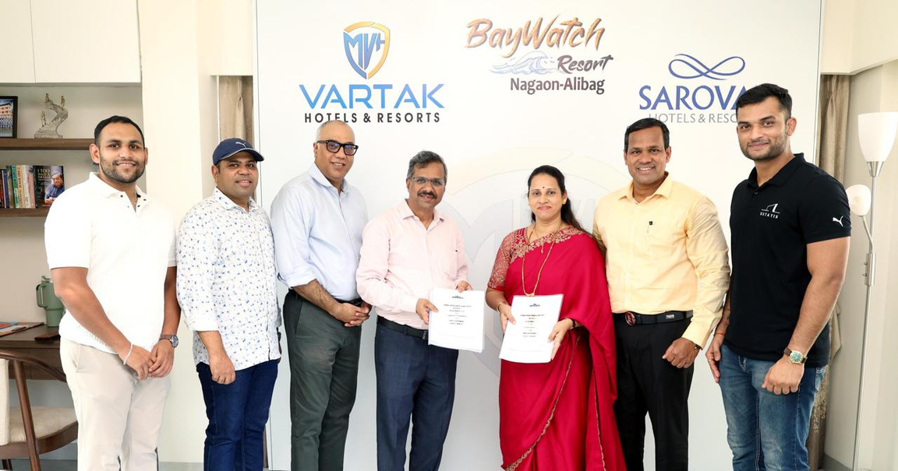
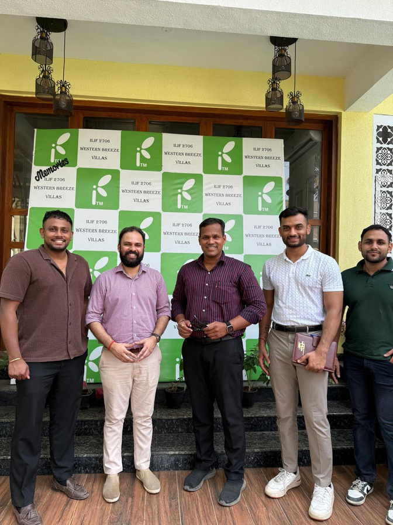

Real estate advisory, development strategy, and sales expertise across Pune and Maharashtra.

Eminence architectural render.
Investors • Homebuyers • Developers • Landowners • Hospitality • Channel Partners
Estatix connects client requirements with land opportunities, product strategy, branding, marketing, and sales execution.
A clear understanding of your requirements, relevant opportunities, and practical transaction support.
Project positioning, mandate sales, plotted development planning support, and land monetization.
Land suitability, hotel concepts, brand fit, development cost assessment, and revenue feasibility.
Based in Pune, with a primary focus on opportunities and engagements across Maharashtra.
Adarsh Chouksey and Kevin John bring leadership to Estatix’s real estate advisory and project engagements.
Adarsh Chouksey
Kevin John
Start with the client’s requirements, budget, timeline, and desired outcome.
Assess the opportunity, market context, product fit, and relevant risks.
Align planning, branding, marketing, and sales around the agreed brief.
Support specialist reviews, sales activity, collections, and transaction follow-through within the engagement scope.
From investment requirements to a family home, Estatix helps you navigate the property search with a clear brief.

Ekaant architectural render. Sold-out project shown as past work.
Requirement and budget assessment, location and product evaluation, opportunity shortlisting, and transaction coordination.
Understand lifestyle needs, compare suitable options, coordinate site visits, and support negotiations and relevant document review.
Speak with our team for current availability. Completed sales mandates in this profile are not presented as available inventory.
Residential and commercial project mandates supported by coordinated branding, marketing, sourcing, sales, and collections.
Use buyer interaction and market understanding to inform product positioning and the developer’s offer.
Develop a coherent brand proposition, marketing plan, and project launch strategy.
Onboard channel partners, train them on the project, train the sales team, and coordinate direct buyer interactions.
Support the developer’s team with post-booking follow-through and collections coordination.
Call +91 7000489767 to discuss your project, target buyers, and mandate requirements.
Plotting development planning support combined with product positioning, branding, marketing, and sales strategy.

Illustrative plotted-development planning material.
Assess the land and market context, proposed plot offering, buyer requirements, and development positioning.
Translate the proposed development into a clear proposition for buyers and channel partners.
Technical planning, legal reviews, and statutory processes require the appropriate specialists. Scope is agreed for each engagement.
Estatix supports landowners and developers through opportunity assessment, buyer matching, and transaction coordination.
Understand the landowner’s objectives and evaluate suitable sale or development options.
Connect relevant land parcels with developers seeking opportunities for new projects.
Coordinate commercial assessment and qualified legal and technical reviews to identify and reduce transaction risks.
Due diligence supports informed decisions; it does not eliminate every potential future dispute.
Share the location, approximate area with units, ownership or representative status, and your objective on WhatsApp: +91 7000489767.
Help investors understand what a land parcel could support, which hotel concept may fit, and the economics to evaluate.
Assess location suitability and the proposed hotel or resort concept.
Identify potential hospitality brands and operators aligned with the investor’s site and brief.
Evaluate estimated construction and development requirements with relevant inputs and specialist support.
Estimate potential revenue based on stated market and operating assumptions. Projections are estimates, not guaranteed outcomes.
Coordinate hospitality brand discussions and advisory work within the agreed scope.
Selected results supplied by Estatix. These projects are shown as completed sales engagements, not current stock.
Architectural renders: Ekaant and Eminence.
Completely sold in less than one year. Estatix achieved an average project rate above the developer’s expectations.
Sold out. A completed residential project in Estatix’s sales portfolio.
Different engagements have different milestones. We distinguish signed hospitality work from ongoing business planning.

Hotel brand engagement signing photograph from the company brochure.
A hotel brand engagement has been signed for a planned 80-room beachside property in Alibaug. Construction and operating status are not stated.
Estatix planned a flying training organization business. The initiative remains under process and is not presented as an operational or launched training organization.
Channel partner sourcing, onboarding, and training connect projects with a prepared sales network.

Channel partner engagement photograph from the company brochure.
Understand the partner’s business, geography, and project fit.
Introduce the project, explain its proposition, and prepare partners and sales teams for buyer conversations.
Support project communication and sales follow-through.
Share your name, business, city, and relevant experience with Estatix on WhatsApp.
Discuss an investment, find a home, bring a project to market, or explore the potential of your land.
+91 7000489767
610, Bramhacorp Business Park, Wadgaon Sheri, Pune, Maharashtra 411014.
Instagram: @estatix.in
YouTube: Estatix channel
Preferred contact times are subject to confirmation by the team.